長くひろがる猫は季節の風物詩 [梅吉]
週末は暑かったですねー。
家を空ける時は涼しく過ごせるように猫様への配慮が欠かせなくなってきました。
がその避暑地で過ごした様子が見られないこともしばしば(⌒-⌒;
暑い冷蔵庫の上で寝ていたり西日の当たる窓辺に寝ていたりするんですよね・・・
なんでー；；
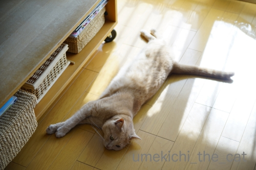
フローリングに伸びていることも多いです。
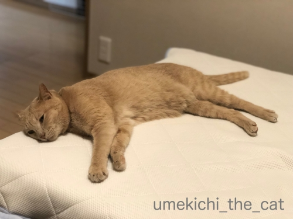
夜もマットレスの足元の方でお休み。
もうお布団の中には入ってきませんよ。
明け方になると「はようおきてや」と圧をかけに
肩口にのしっ！と乗ってはきますけどwww
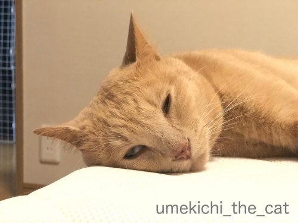
寝入る前は白目がち(*>艸<)
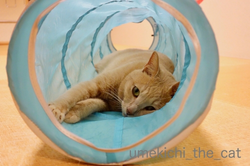
トンネルのなかでも長くなってます。
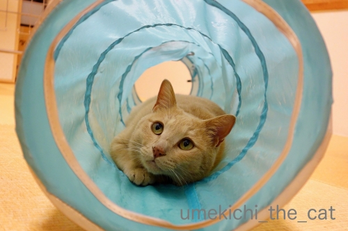
見た目的には一番涼しそうな場所でしょうか。
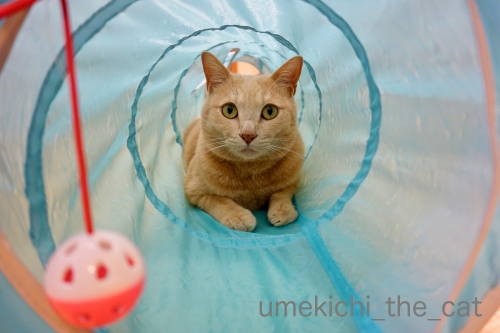
最近トンネルを覗き込むと飛びついてくるようになりました。
おかーさんは獲物ですかー！！
 ↑ガブッと一押し↑
↑ガブッと一押し↑
週末は暑い中（大阪市内の最高気温は32.3℃の日。）
毎年近所の公園で行われる野外音楽祭に行ってきました。
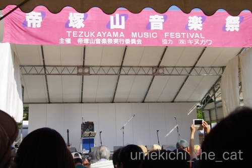
テレビ局やラジオ局の主催、協賛などとは無縁の音楽祭。
小さくラジオ局の協力を示す広告がありましたが運営には関わっていない様子。
商業ベースの騒がしい宣伝のようなものがなくて好ましいです＾＾
そしてこの音楽祭、公園エリアは完全無料！！
（カフェやイベント会場での公演は有料のものもあります）
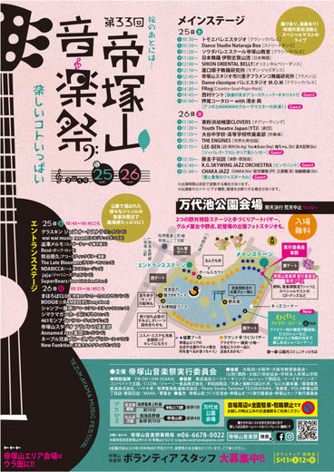
（クリックで拡大します）
近所の飲食店の出店や作家さんの出店がたくさんあって賑わってます。
ステージはメインとサブステージの二つ。
近所のフラメンコ教室やバレエスタジオの生徒の皆さんのステージがあったりしますが
カラオケ大会のような出し物はありません。
（だから行きます。行けます？笑）
メインのゲストが「無料で良いんですか？」と聞きたくなるような豪華な顔ぶれなのも特徴です。
過去に私が見たのはChar＆石田長生、渡辺香津美、、PRISMかな。
（PRISM、私は知らないバンドでしたが日本フュージョン界の草分けなんだとか。
おっとがたいそう喜んでましたよ。）
今年のメインゲストはなんと押尾コータローくん！
コータローくんは流石のテクニックと音楽性でした。
一流ミュージシャンのオーラもビシバシ〜。
が今回話題にするのはこの方。
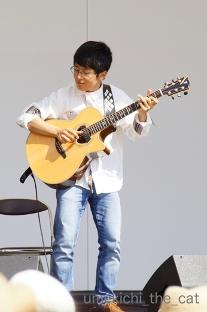
西村ケントくん。ご存知の方、いらっしゃるでしょうか。
コータローくんも楽しみでしたが今回はこの方を目当てに行ったようなものです。
ケントくんは弱冠16歳の高校生。関西中心に活動する浪速っ子。
CDデビューは14歳、リリースしたアルバムはすでに３枚になります。
彼の凄さは演奏を聴くのが一番！
今回私たちが見たステージがYouTubeにアップされていたのでお借りました。
スティビー・ワンダー 「I Wish」
このほか演奏されたのは
マイケル・ジャクソン 「Thriller」
アニタ・ベーカー 「Sweet Love 」
ジェイムズ・イングラム「Just Once」
TOTO 「Africa」 など。
どうです！
このおっちゃん、おばちゃんの琴線に触れるセットリストも良いでしょう！？0(≧▽≦)0
今はカバーを演奏する活動が主軸のようですが
そのうちオリジナル曲もウエイトを占めるようになるのかな＾＾
今後楽しみなアーティストです！
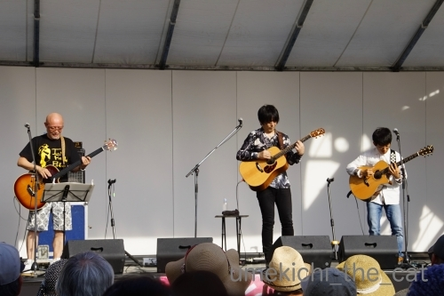
あまりにもレアなスリーショット。
こっそりパチリしちゃいました。ごめんなさいm(_ _)m
コータローくんの横でベースを弾いているのは
NANIWA EXP（ NANIWA EXPRESSから変更）の清水 興さん。
一杯きこしめしていらしたようですが（爆）演奏はブンブンでした＾＾
ケントくんの「Thriller」。公式チャンネルよりお借りしました。
お時間のある方はどうぞー。
暑い日でしたが暑さ対策万全で臨みましたよ。
幸いにもテント下の席に座ることが出来たので快適に観覧。
元気に家に帰って来ることができました(´▽｀)
家を空ける時は涼しく過ごせるように猫様への配慮が欠かせなくなってきました。
がその避暑地で過ごした様子が見られないこともしばしば(⌒-⌒;
暑い冷蔵庫の上で寝ていたり西日の当たる窓辺に寝ていたりするんですよね・・・
なんでー；；
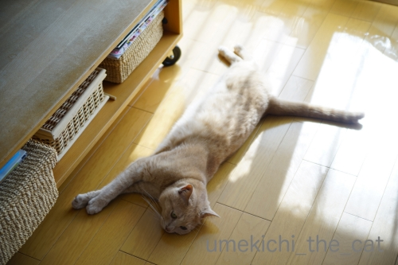
フローリングに伸びていることも多いです。
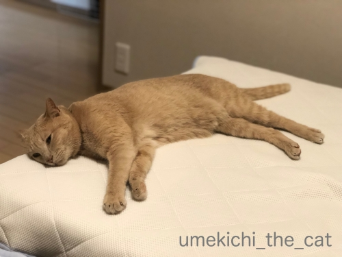
夜もマットレスの足元の方でお休み。
もうお布団の中には入ってきませんよ。
明け方になると「はようおきてや」と圧をかけに
肩口にのしっ！と乗ってはきますけどwww
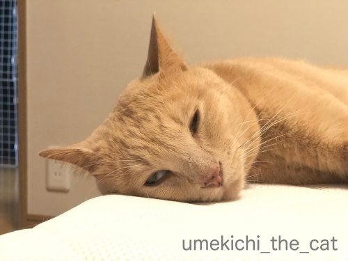
寝入る前は白目がち(*>艸<)
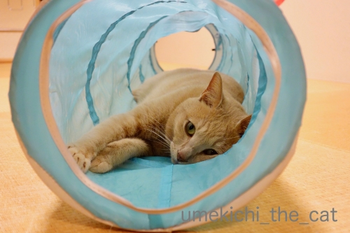
トンネルのなかでも長くなってます。
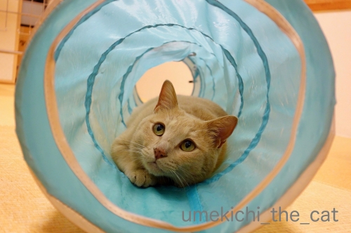
見た目的には一番涼しそうな場所でしょうか。
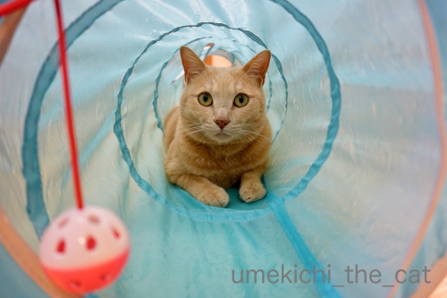
最近トンネルを覗き込むと飛びついてくるようになりました。
おかーさんは獲物ですかー！！
週末は暑い中（大阪市内の最高気温は32.3℃の日。）
毎年近所の公園で行われる野外音楽祭に行ってきました。
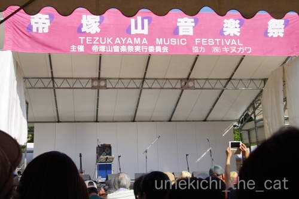
テレビ局やラジオ局の主催、協賛などとは無縁の音楽祭。
小さくラジオ局の協力を示す広告がありましたが運営には関わっていない様子。
商業ベースの騒がしい宣伝のようなものがなくて好ましいです＾＾
そしてこの音楽祭、公園エリアは完全無料！！
（カフェやイベント会場での公演は有料のものもあります）
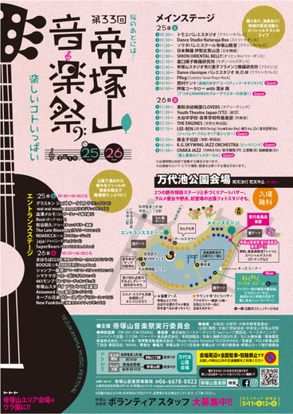
（クリックで拡大します）
近所の飲食店の出店や作家さんの出店がたくさんあって賑わってます。
ステージはメインとサブステージの二つ。
近所のフラメンコ教室やバレエスタジオの生徒の皆さんのステージがあったりしますが
カラオケ大会のような出し物はありません。
（だから行きます。行けます？笑）
メインのゲストが「無料で良いんですか？」と聞きたくなるような豪華な顔ぶれなのも特徴です。
過去に私が見たのはChar＆石田長生、渡辺香津美、、PRISMかな。
（PRISM、私は知らないバンドでしたが日本フュージョン界の草分けなんだとか。
おっとがたいそう喜んでましたよ。）
今年のメインゲストはなんと押尾コータローくん！
コータローくんは流石のテクニックと音楽性でした。
一流ミュージシャンのオーラもビシバシ〜。
が今回話題にするのはこの方。
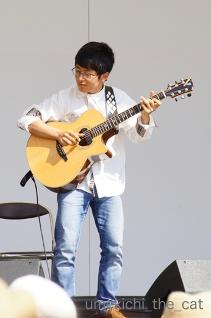
西村ケントくん。ご存知の方、いらっしゃるでしょうか。
コータローくんも楽しみでしたが今回はこの方を目当てに行ったようなものです。
ケントくんは弱冠16歳の高校生。関西中心に活動する浪速っ子。
CDデビューは14歳、リリースしたアルバムはすでに３枚になります。
彼の凄さは演奏を聴くのが一番！
今回私たちが見たステージがYouTubeにアップされていたのでお借りました。
スティビー・ワンダー 「I Wish」
このほか演奏されたのは
マイケル・ジャクソン 「Thriller」
アニタ・ベーカー 「Sweet Love 」
ジェイムズ・イングラム「Just Once」
TOTO 「Africa」 など。
どうです！
このおっちゃん、おばちゃんの琴線に触れるセットリストも良いでしょう！？0(≧▽≦)0
今はカバーを演奏する活動が主軸のようですが
そのうちオリジナル曲もウエイトを占めるようになるのかな＾＾
今後楽しみなアーティストです！
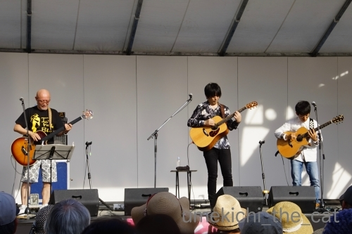
あまりにもレアなスリーショット。
こっそりパチリしちゃいました。ごめんなさいm(_ _)m
コータローくんの横でベースを弾いているのは
NANIWA EXP（ NANIWA EXPRESSから変更）の清水 興さん。
一杯きこしめしていらしたようですが（爆）演奏はブンブンでした＾＾
ケントくんの「Thriller」。公式チャンネルよりお借りしました。
お時間のある方はどうぞー。
暑い日でしたが暑さ対策万全で臨みましたよ。
幸いにもテント下の席に座ることが出来たので快適に観覧。
元気に家に帰って来ることができました(´▽｀)

カフェオレ色の梅吉

梅吉 2023年8月10日 永眠


梅吉と出会った譲渡会

犬猫の理由なき殺処分ゼロ
妄想広告
UMEKICHI 光

爆発的に早い！
時々攻撃的！
Thanks to Mr.Boss365
爆発的に早い！
時々攻撃的！
Thanks to Mr.Boss365

梅吉さん半分白目! もう一息!!
東京も暑くて炎天下は出たくありません。
by zombiekong (2019-05-27 00:23)
何か涼しそうでいいニャ～
私は土日に外でのオフ会に参加したので疲労困憊気味です（ﾟ□ﾟ）
by 英ちゃん (2019-05-27 01:23)
そうそう！ニャンコって意外と、そこ暑くないんか？というようなところにいたりするんですよー。トンネル、色は涼しそうだけど、風がなくて暑いですよね、きっと。
野外ライブお疲れ様でした。この時期なら気持ち良いかと思いきやまさかの暑さで大変でしたねー。ステージがいかにも手作りっぽい。これはもう中身で勝負ってやつですね。充実したライブだったようでなによりです。
by ChatBleu (2019-05-27 06:12)
山本コータローさんじゃなかったのですね＾＾；
by ぽちの輔 (2019-05-27 06:15)
そうそう、お猫様のために温度や冷房時間を考えて
設定して出かけるのに家に帰ると冷房がほぼ効いてない部屋で
「暑い〜」って伸びてたり乗るんですよねぇ(ｰ ｰ;)
「いや、こっちの部屋涼しいから」ってかみさんが
お猫様を引き連れて行くと「あっ、本当だ( ^ω^ )」って・・・(*_*)
我が家でも夏場にはほぼ毎日繰り返される光景ですw
by ニッキー (2019-05-27 07:15)
梅吉さんタックル？？？勢いがありそうですね。
by ニコニコファイト (2019-05-27 07:18)
おぉ～♪伸びてますねぇ～(#^.^#)
これからの季節、のびのび梅吉さんが
いっぱい見られそうですね♪
トンネルを覗くのを今か、今かと
待っているような気がします（笑
by きぃ (2019-05-27 08:32)
梅吉さん、暑さで伸びていますね！
エアコンが恋しくなりますね(^^)
by ma2ma2 (2019-05-27 10:43)
こんにちは。
「家を空ける時」は注意ですね。火の元より注意です？
一応戸締りしてエアコンタイマーしています。
梅吉くん！！日焼け望んでますね（笑）寝る寸前のお顔！！癒し顔ですね。
トンネル内も暑そうな感じしますが、遊びに反応！！元気で平和です。
野外音楽祭、地元密着？親しみやすい感じです。
小生好きな「Char」さんは凄い！！「渡辺香津美」のギターテクを真似しました。
最近、フュージョンやクロスオーバー等のジャンル人気ないので残念です。
押尾コータローさん！！モントルー・ジャズにも出演したアコギの名手です。
西村ケントくん、押尾さんに類似？演奏曲も小生世代にピッタシな感じ！！
暑い中、生音を楽しんだ感じですね。無料は凄いなー！？(=^･ｪ･^=)
by Boss365 (2019-05-27 11:41)
リビングはすでに昼間エアコンつけっぱなしですが、帰宅すると暑い隣の部屋で床に伸びてたりします^^;
暑がりのくせに鈍感なんでしょうか？！
カフェオレ色の梅吉さんにはブルーのトンネルがよく似合う♪
顔面正面衝突しないようにお気をつけくださいね。
猫って意外と石頭、私の方がぶっ倒れて星が飛びました(≧▽≦)
帝塚山音楽祭、行かれたんですね！
阿部野区に住んでいた頃はよく行きました。
当時は桑名正博、木村充揮やナニワエキスプレスが飛び入りで参加したり、楽しかったな～♪
押尾コータローさん、いいな～曲も最高です(#^^#)
万代池公園は桜もきれいでのんびりお花見にもいいですよ。
by ゆきち (2019-05-27 12:24)
暑くなってきましたね。
トンネルの中の梅吉さんが見た目には本当に涼しそうですが、実際はどうなんでしょう・・・。
走れコータローが頭を過ぎってしまいました(^_^;)
by kou (2019-05-27 13:46)
わかります〜〜
暑いだろうなと思って、涼しいところを作ってあげても
相変わらず暑そうな処にひっくり返ってますよね(笑)
うふふ。梅吉くんの白目ゲットｗｗ
トンネルは水色がとっても涼しげでいいよね^^
西村ケントさん、知りませんでしたが心地よい演奏ですね^^
聞いていて楽しいわ。
by リュカ (2019-05-27 14:02)
昼下がり、梅吉さんの延び吉さんを見ていると、
つられて延びたくなります（笑）
水色のトンネルが、
梅吉さんのカフェオレ色とピッタリ合っています。
『帝塚山音楽祭』凄いイベントがあってるのですね。
10年住んでいるのに、知らないことばかり。
来年あたり覗いてみたいです（混雑するでしょうねw）
by kiki (2019-05-27 15:37)
うちもここ3日ほどだらーんと伸びてますね。急に暑くなりすぎです(≧▽≦)
うちのきなこも暑い日に冷蔵庫の上で寝てることがあります。？？？ですよね(;^ω^)
by palpal (2019-05-27 20:27)
うちの子だけが、そうなのかと思っていたら！？
梅吉さんもなんですね！！(^^)
うちの子ももう布団の外・・・ちょっと寂しいですよね(;^ω^)
朝は遠～くから誰かが起きるのを偵察してます(@_@。
それでも起きないと手をかまれます！！(^^)
by 50oyaji (2019-05-27 20:29)
梅吉さん、このくらいの暑さなら平気なのかもしれませんね。
関係ないけど、うちはまだエアコンつけてません。^^;
プリズム、懐かしいですね。
ベースの渡辺健（だったかな）のフレーズをコピーしようとしたけれど、難しすぎて諦めた過去があります。^^)
by yes_hama (2019-05-27 21:43)
動物はその空間で一番快適な場所をしっているとよく言いますよね
フローリングで伸びているのが気持ちいいのかな？
僕のブログにコメントをありがとうございます
一人でも多くの方に知っていただいた方がいいので
是非お願いします
by 藤並 香衣 (2019-05-27 22:29)
おお！帝塚山音楽祭！
以前、といっても20年以上前、何回か出演しました。
当時はもっとこじんまりしてたかと。
池のそばのサブステージみたいなとこ。
石田長生さん、いいなぁ。
お亡くなりになったんですよね。。。
by よーちゃん (2019-05-28 09:03)
ニャンズは意外と冷房の効いたお部屋が好きでないかも？と思っています。
西日の当たる場所で伸びていたりしますし。
暑くなると日陰へ移動しているので、適度に使い分けてにゃん達はそれなりに
快適に過ごしているご様子(笑 なので真夏も冷房入れて出かけないです(笑
押尾コータローさんってウクレレ？でしたか・・・早朝4時くらいのどこかのテレビのチャンネルで夜景とともに流れてきます(笑
Charさんってまだ現役なんですね。フュージョン界の草分けとな！
シャカタクのNight Birdsよく聴いてましたわ～(;^^A
by marimo (2019-05-28 10:44)
長くなる季節がやってきましたね(笑)
うちも枕の隣ではなく、足元で寝るように
なってきました。夏だなー(*´ゝ艸･`)ﾌﾟﾌﾟ
そうそうｗなぜかあつーーい場所で寝ていたり
しますよね(≧ω≦)思ったより暑がりではないのかも＾＾
梅ちゃんのトリップ顔ｗｗ意識が宇宙をさまよっていますねｗ
音楽祭があったのですね♪
うーーん、押尾さんとかお名前だけ存じ上げていますが
曲とかよく知らないですΣ(ﾉ∀｀*)ﾍﾟﾁ
きっと耳にしたことはあるんでしょうね＾＾
by カトリーヌ (2019-05-28 11:41)
渡辺香津美さん、懐かしい〜
会場の雰囲気がいいですね！^ ^
by 小松達也 (2019-05-28 19:20)
日差しギラギラ、すっかり夏ですね！
先日、福岡よりも札幌の方が気温が高かったのにはびっくりでした。
梅さま、フローリングでながーくなるのが気持ちの良い季節ですね^^
メインとサブステージ・・・夏フェスですね！（≧∀≦）
by Ja-Kou66 (2019-05-28 23:40)
zombiekongさん＞
白目、ああ！もう一息！！の寸止めが難しいようですよ(*>艸<)
達人、梅吉ならではの技だと言っておりますwww
なるほど〜。夜の徘徊だと暑さもしのげますね(≧▽≦)
英ちゃんさん＞
青いトンネルはプールに入っているみたいでしょう？＾＾
あの暑さの中２連チャンの外出は堪えそうです！
ちゃんと休息を取ってくださいね。
ChatBleuさん＞
梅吉は夕方になるとわざわざ西日のあたる窓辺に移動するんですよ・・・
ちょっと「M？」って感じですwww
ナイロン生地のトンネル、梅吉の爪で穴がいっぱい空いているので
風通りはバッチリです〜(*>艸<)
野外ライブ、風ハミが例年通りの時期開催だったら
こんな風に暑かったんだろうな〜って思ってました！
ぽちの輔さん＞
コータロー違い、じゃなくて良かったです(*>艸<)
ニッキーさん＞
お猫様を引き連れて行くゴッドマザー様・・・
なんだかフレーメンの音楽隊を思い出しちゃいましたw
ちゃんとニャンズさんが付いて行くところも凄いです！
それはやっぱりゴッドマザー様だからなのかしら。
梅吉はそういう時は絶対付いて来てくれません ( ･̆ˍ･̆ )
ニコニコファイトさん＞
タックルは破壊力抜群です！
きぃさん＞
伸びたり開いたりが
いっぱい見られる季節になりました♪
が、なぜか通り道とかキッチンの足元でされるので
ちょと困ります・・・(⌒-⌒;
ma2ma2mさん＞
さらに長くなったらエアコンも考えます！
Boss365さん＞
ナイロン製のトンネル、
（梅吉が）爪穴をたくさん開けて通気性を良くして使ってます(*>艸<)
我が家も寝室だけエアコンをつけて出かけたりしますが
涼しい部屋で過ごした痕跡はまるでありませんw
暑いくらいの方が好きなんでしょうか！？
Charはかっこいいですよねー！
以前大阪のとある番組の復活イベント（だったかな）のジョイントライブがあって
錚々たるメンバーが登場したのですが・・・（香津美さんとかポン太さんとか）
最後は全部Charが持ってってましたw
10年以上前、香津美さんとコータローくんのデュオライブを見たことがあるのですが・・
大御所と若手の図。
コータローくんとケントくんのツーショットはそれと重なって
おばちゃん目頭が熱くなりましたよ。
コータローくんも大きく成長したねーって。若い子引き立てるようになったねって。
って私コータローくんより年下なんですけどね(*>艸<)
ゆきちさん＞
こてつくんも自虐的な・・・(⌒-⌒;
でもバテちゃうからちゃんと涼しいところにいてー！
こてつくん、梅吉よりも被毛が厚そうだもの・・・
顔面衝突はまだなんとか回避しております。
お手手も伸びてくるので顔に引っかからない様に
（治りが遅いので必死ですw）
覗くときは神経を研ぎ澄ますので良いトレーニングだと思ってます(*>艸<)
おおお！桑名さんご覧になったのですね。ご実家が帝塚山辺りだったのですよね。
ご健在ならきっと出演されてたんだろうなーと思うと残念です。
桜の時期も毎年のぞいていますよー。
近年は名所としてたくさんの人出があり
BBQしている不届きものがいるので
のんびり雰囲気が変わってきているかもしれません・・・
kouさん＞
トンネルはナイロン製。
普通なら暑いですが梅吉が開けた穴がいっぱいで・・・
風通しは抜群ですwww
コータローつながりですものね(*>艸<)
リュカさん＞
蒸し暑いくらいの方が好きなのかしらと思うことありますよねw
梅吉は３時ごろになるとわざわざ西日の当たる出窓に行きますよ(⌒-⌒;
Mだ！M！！
暑くなって白目指数が上昇してます。
振り向いたら完璧白目なこともよくあるんだけど
カメラやスマホを取りに行くと顔作ってたりしてw
お見せできないのが残念すぎるー。
ケントくん、私たちがシニアと呼ばれる頃には（笑）
ぶいぶい活躍してそうな気がします。
そのとき「あの時の子だー！」って思い出してね＾＾
kikiさん＞
梅吉に倣って伸びと共に白目も是非(*>艸<)
帝塚山音楽祭、今年で３３回目なんですって。
地域で運営する音楽祭でこれだけ長く続いているのは珍しい、とか。
公園のステージも普段見ることのない素人の方のフラメンコや
ブラバンの演奏があったりして楽しいですよ＾＾
大混雑、というわけでもないので気軽にお越しいただけると思います。
周辺のお店でのライブもあったりするので
そちらも良いかもしれません。
（私は行ったことないのですが・・・）
palpalさん＞
あまり動かないので「調子悪い？」と心配するも
おやつやご飯の気配に猛ダッシュでくるので「元気だな」と
安心する日々ですw
うちの冷蔵庫、上部に熱を逃がすなんか（笑）が付いてるんだけど
真夏でもその上に乗ってます。頭沸くわ！！
50oyajiさん＞
全国各地でながーい猫や猫の開きが観測されている様ですよw
お布団の季節、身動きが取れなくて辛い時もありますが
ニャンコの温もりを感じられないのは寂しいですよねー。
朝の目覚ましは手をがぶっ！なんですね(*>艸<)
うちはアゴおよび頬骨をがぶられます。
もちろん甘噛みなんですが顔に赤い線がつくので止めてほしいです(⌒-⌒;
yes_hamaさん＞
エアコン、
この時期から付けてたまるかー！って気持ちよくわかりますw
梅吉のためにつけることはあるかもしれませんが（笑
人間用としてはもう少し先まで頑張りたいです＾＾
プリズム、ご存知でしたか！さすがです！！
コータローくんは清水興さんのカセット教則で
ベースの勉強してたって言ってましたよ(≧▽≦)
藤浪 香衣さん＞
猫の寝そべる場所、確かに快適なんです。
え？私いちいち一緒に寝て確かめて見ちゃうんですよー(*>艸<)
すごく迷惑そうな顔されますがw
フローリングの場合は人の通り道が多いのでとっても迷惑です(⌒-⌒;
でもって近くを通ると足にじゃれついてきますwww
鹿さんの記事、明日アップします＾＾
by ちぃ (2019-05-29 17:47)
よーちゃん＞
行ったことありますレスポンスは予想してましたが
出演したことあります、は全くの予想外です！
よーちゃん、さすがです0(≧▽≦)0
ってバンドですか？高座ですか？？
ブログ記事にするのに過去の出演者を見ていたら
桂一門のお名前を見つけたので・・・
落語をやっていた時期もあったようなのですよ。
長生さん＝石やんは他のジョイントライブでも拝見しました。
帝塚山音楽祭の時と同様Charと一緒でしたよ。
「なぁ、Charもっとワシと一緒に活動してんか〜」
みたいなこと言って笑いをとっていらっしゃいました。
夭折、残念ですm(_ _)m
石やん、らもさん、なぜか被ります。
marimoさん＞
西日好き発見！！
梅吉も夕方近くになるとわざわざ西日の当たる部屋の出窓に寝に行きますw
で、ほっかほかになって戻って来てリビングのフローリングでクールダウン。
使い分け、温度管理はちゃんとできていると思うのですが
やっぱりちょっと心配になっちゃいます (^_^;)
コータローくんはギターですよー。
テレビのBGMにはよく使われていると思うのでもしたしたらそうかも＾＾
ゴンチチの可能性も高いけど。（BGMの双璧！？）
ウクレレならジェイク・島袋さんかも、です。
シャカタクも懐かしいです！「男女７人・・・」だわ〜。
カトリーヌさん＞
そうそう！猫って暑いの得意かもしれませんよね。
寒いよりず〜〜っとまし、って感じでしょうか＾＾
この季節になると梅吉はあちらの世界とこちらの世界の交信を始めます。
最終的には白眼になってあちらにイってしまうの・・・
置いていかないでーって感じです(*>艸<)
コータローくんは（っても年上なんですけど）大阪在住のギタリストです。
コマーシャルやテレビのBGMでよく使われているので
きっと耳にしたとがあると思います。
テレビあまり見ないので「あれのあの曲！」って言えないのが辛いですwww
小松達也さん＞
香津美さん世代ですね！
おっとはNHKの教育テレビでやってたギター講座を見てたそうですよ＾＾
Ja-Kou66さん＞
すっかり夏です！で梅雨のあと真夏がやって来ます・・・
大阪に来て四季じゃなくて五季だなって悟りました。
春・夏・真夏・秋・冬ってwww
夏フェス、若者がいくようなガチなのは到底無理なので
家から歩いて行って気軽に観られるこういうゆるい感じが
私にはぴったりです。
それでもお日様浴びてたら疲れました〜。
by ちぃ (2019-05-30 17:52)